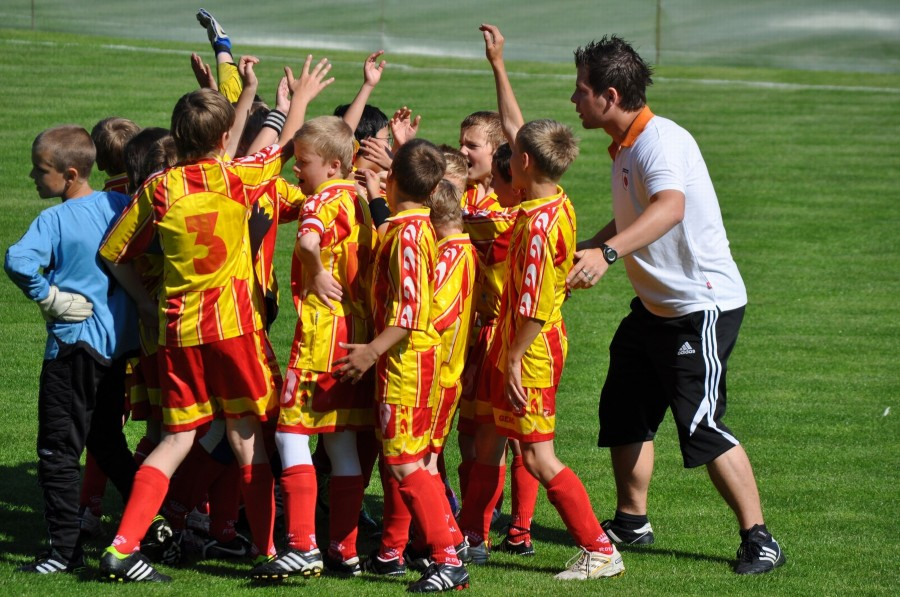

Jedním ze způsobů, kterými prosazujeme myšlenku smysluplnějšího sportu, je pořádání sportovních soutěží. Sportovní soutěže už z principu zdůrazňují společenskou roli sportu a nabízí výbornou příležitost pro osobní prožitky a osobní i týmový rozvoj sportovců i celých týmů, ať už jde o sportovní družstva, rodiny, nebo pracovní kolektivy. Nabízíme proto programy a soutěže pro všechny výkonnostní i věkové kategorie, amatérské i profesionální: čistě zájmový, výkonnostní i vrcholový sport pro děti, mládež, juniory, dospělé i seniory — třeba i společně.
